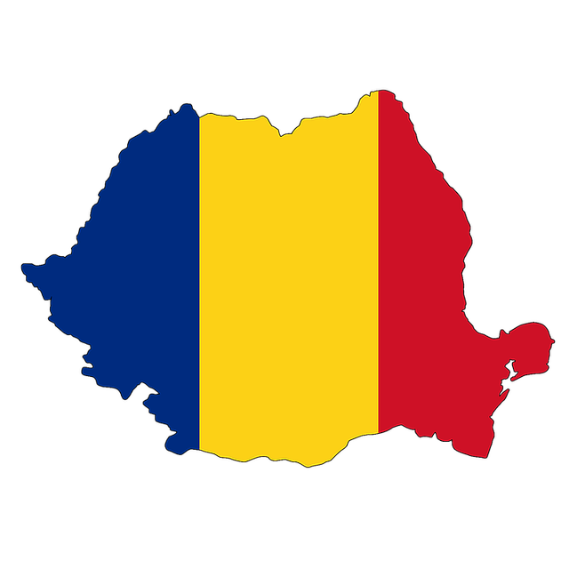
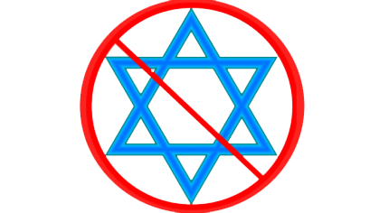
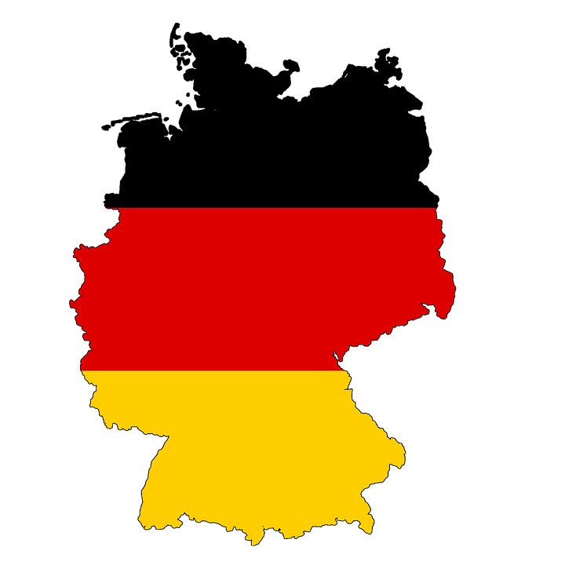
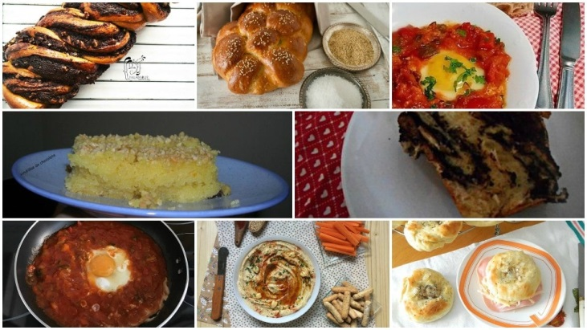
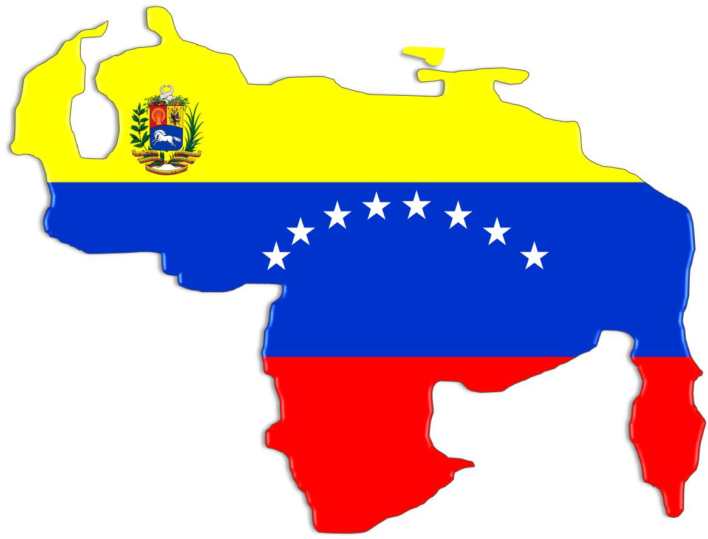
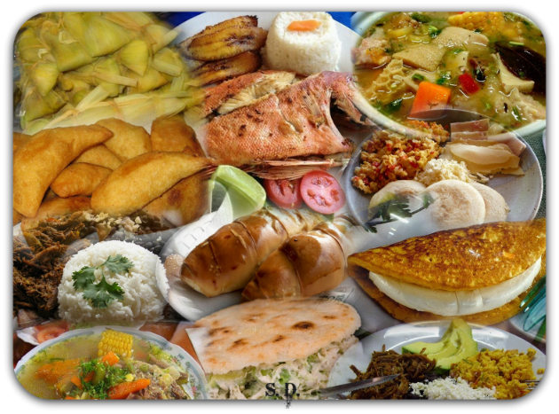
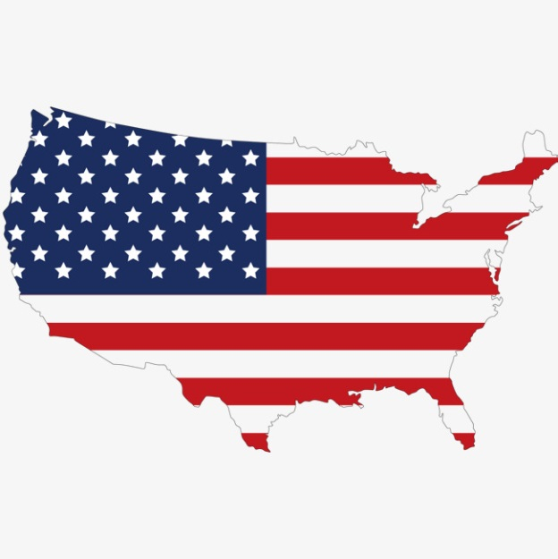
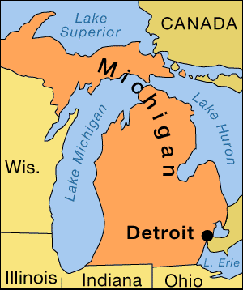

RUMANIA
(Tierra natal de mi abuelo Nico)

Rumania es un país ubicado en la intersección de Europa Central y del Sureste, en la frontera con el Mar Negro, limita con Hungría y Serbia al Oeste, Ucrania y Moldavia al Noreste y al este, y Bulgaria al Sur. Rumania es el noveno país más grande de la Unión Europa por área y cuenta con la séptima mayor población, con más de 20 millones de habitantes. Su capital y ciudad más poblada es Bucarest la décima ciudad más grande de la Unión Europea.
La Constitución actual de Rumania fue creada en 1991 y reformada en 2003. En ella se establece que el país es una república parlamentaria democrática y multipartidista. Se establece la elección popular de un presidente y un parlamento mediante votación de los ciudadanos mayores de 18 años, y la existencia de una corte constitucional y otra corte menor.
Con respecto a su economía, Rumania es uno de los principales productores y exportadores de productos agrícolas de Europa
La población de Rumanía alcanza los 21.848.000 habitantes (2006). La mayoría de la población pertenece a la etnia rumana (88,9 %), seguida por una importante colectividad de húngaros (6,6 %), concentrados sobre todo en la región de Transilvania, y de gitanos (2,5 %). Ucranianos (0,3 %), rusos, alemanes (0,3 %), turcos, búlgaros, italianos y serbios, junto con otras minorías, constituyen el resto de la población. Los habitantes se concentran en las llanuras, donde están los centros industriales y se desarrolla la agricultura a gran escala.
Rumania es un estado sin religión oficial, aunque más del 89 % de la población se adscribe a la Iglesia ortodoxa rumana (según el censo de 2002).
El rumano es el idioma oficial del país. Le siguen en importancia el húngaro y el romaní (que no tiene nada que ver con el rumano, sino con los romis, los gitanos rumanos), hablados por las poblaciones de esas etnias. El ucraniano es hablado en áreas de Maramures, Bucovina, Dobrucha y Banat.
Con respecto a la gastronomía, en la cocina rumana confluyen múltiples y dispares influencias modificadas en el curso de los siglos, es el reflejo de las manifestaciones de la vida de país en el que las culturas y tradiciones son muy diversas. La cocina rumana tiene sin duda origen balcánico, pero ha desarrollado características muy particulares debido a la marcada influencia de la cocina rusa y turca. También tiene especialmente influencia húngara y francesa, y se caracteriza por poseer una gran cantidad de variedad de productos derivados de la fertilidad de su tierra.
Los Judíos en Rumania
En Rumanía. la población judía es de alrededor de 14.000 individuos. La mayoría de estos son judíos asquenazíes. Sin embargo, también hay sefardíes, pero la mayoría de estos son gente de edad avanzad ya que los jóvenes se han asimilado. La organización que coordina las actividades de los judíos rumanos es 1a Federación de Comunidades Judías.
Historia
Los judíos se asentaron en esta región desde la Edad Media, específicamente en Moldavia y Transilvania. Llegaron tras la expulsión de España. La migración de los judíos ibéricos a los Balcanes fue favorecida por el sultán otomano Beyazid II, quien envió incluso buques de su Armada para transportar desde las costas españolas a numerosos judíos expulsados por los Reyes Católicos en 1492.
Los sefardíes, llegaron con su cultura y la establecieron, siendo el idioma hablado por ellos el ladino o judeoespañol, que se habló durante mucho tiempo en tierras de la actual Rumanía, sobre todo en las ciudades portuarias del Danubio y en la Dobruja Meridional. Sin embargo, empezaron a perder influencia a partir de finales del siglo XIX, cuando comenzaron a llegar a Valaquia y Moldavia oleadas de asquenazíes de lengua yiddish, huyendo de las persecuciones de que eran objeto en Rusia y Galitzia. Y desde entonces Moldavia se convirtió en el centro cultural de la vida judía.
Antisemitismo moderno

El antisemitismo ha sido una de las características de la historia moderna rumana y se reflejó en la vida social, económica e intelectual del país. Ya a mediados del siglo XX se había extendido la creencia de que los judíos formaban parte de una conspiración internacional que tenía por objetivo la destrucción del Estado rumano. Por lo tanto la clase gobernante impidieron la asimilación de los judíos a la sociedad bloqueando la concesión de derechos civiles.
La situación de la población judía rumana empeoró notablemente según el país fue estrechando sus lazos con Alemania en el verano de 1940. Se aprobaron leyes que impedían la participación de los judíos en la administración pública y los privó de sus derechos civiles y políticos.
También privaron a los judíos de sus propiedades, les expropiaron sus negocios. Se prohibían los matrimonios mixtos y la conversión de los judíos al cristianismo.
En 1940 se produjeron diversos pogromos en el sur de Bucovina y en el norte de Moldavia. Asesinaron y violaron a mujeres, y mataron cruelmente a niños. Muchísimos hogares de judíos fueron saqueados, sus tiendas incendiadas y numerosas sinagogas profanadas.
A raíz de los decretos antijudíos impuestos por los gobernantes, en la que excluían a los judíos de la sociedad, y el antisemitismo ya arraigado en la población, que se vio enaltecida tras los pogromos, la población se vio reducida y de los 756.930 judíos que residían en el país en 1930 quedaron 600.000. Principalmente a causa de la emigración (entre ellos mi abuelo Nico con sus padres y hermano menor).
De los seiscientos mil judíos que vivían en Rumanía en el otoño de 1940, solo alrededor de la mitad sobrevivieron a la guerra. De los deportados de Bucovina y Besarabia, al menos la mitad perecieron.
A la guerra sobrevivieron 350.000 judíos.
Cabe destacar que antes de la Segunda Guerra Mundial, la Comunidad Judía de Rumania constituía la cuarta comunidad judía más grande a nivel mundial tras la de Polonia, Rusia y la de Estados Unidos. Para que tengamos una idea de la que significaba o representaba esta comunidad.
La mayoría de los sobrevivientes huyeron luego de la Rumania comunista y emigraron a los Estados Unidos solamente unos 14.000 judíos, la mayoría mayores de 60 años, viven hoy en Rumania.
Hoy en día existen 86 sinagogas y 821 cementerios repartidos por toda Rumania. Y lamentablemente se ha vuelto una tarea heroica y casi imposible la conservación de estas.
ALEMANIA
(Tierra natal de mi abuela Sarina)

Oficialmente conocida como; República Federal de Alemania, es un país soberano centroeuropeo y miembro de la Unión Europea; se organiza como una república parlamentaria federal y su capital es Berlín. Su territorio limita al norte con el mar del Norte, Dinamarca y el mar Báltico; al este con Polonia y la República Checa; al sur con Austria y Suiza, y al oeste con Francia, Luxemburgo, Bélgica y los Países Bajos.
Con más de 82,67 millones de habitantes, representa la mayor población entre los estados miembros de la Unión Europea y es el hogar del tercer mayor grupo de emigrantes internacionales. Después de los Estados Unidos, Alemania es el segundo destino de las migraciones más popular en el mundo.
Alemania es miembro de la Organización de las Naciones Unidas, la OTAN, el G8, las naciones G4. Es la cuarta mayor economía mundial en cuanto al PIB nominal, la primera de Europa.
Es una república federal, democrática, representativa y parlamentaria
El cristianismo es la religión mayoritaria, con 48 millones de adeptos (61 %). La segunda más extendida es el islam, con 4 millones de seguidores (5 %), seguido por el budismo y el judaísmo, ambos con cerca de 200.000 adeptos (0,25 %). El hinduismo tiene unos 90.000 adeptos (0,1 %). Todas las demás comunidades religiosas tienen menos de 50.000 (o inferior a 0,05 %) adherentes. Cerca de 19,9-24 millones de alemanes (25-33 %) no han registrado denominación religiosa.
El alemán es el oficial y principal idioma hablado en Alemania.
La cocina alemana varía enormemente de una región a otra. Las regiones del sur de Baviera y Suabia, por ejemplo, comparten una cultura culinaria con Suiza y Austria. Carne de cerdo, carne de vacuno, y aves de corral son las principales variedades de la carne consumida, con la carne de cerdo como la más popular. A lo largo de todas las regiones, la carne se come con frecuencia en forma de salchicha. Más de 1500 diferentes tipos de salchichas se producen en el país.
Al ser un país de inmigrantes, ha adoptado muchos platos internacionales. Platos italianos como pizza y pasta, o turcos y árabes como el kebab están bien establecidos, sobre todo en ciudades grandes. Restaurantes chinos y griegos están también considerablemente extendidos. La bebida nacional es la cerveza.
Historia de los judíos en Alemania
Los judíos llegaron en tiempos del Imperio romano. A esta zona se le identificó con el nombre de la tierra de Askenaz, de ahí su denominación de askenazíes.
Los judíos vivían principalmente del comercio y gozaban de una gran autonomía. Las comunidades judías se desarrollaron hasta fines del siglo XI gracias a la tolerancia de los soberanos. Los judíos alemanes hablaban un dialecto germánico; el yiddish, que se convertirá en la lengua de todos los judíos de la Europa Central.
Los judíos vivían bajo la protección directa del emperador y pudieron desarrollarse tanto en el comercio como a nivel espiritual. Se les situó en ciudades especiales, donde tenían autonomía religiosa. Se profundizó el estudio del Talmud y de la Torá.
Pero llegaron las cruzadas y todo cambió. Se produjeron numerosas masacres de poblaciones judías. Presentes desde hacía siglos, los judíos se convirtieron de repente en extranjeros y en asesinos de Cristo que debían ser castigados antes de liberar los lugares santos. Fueron masacradas comunidades a todo lo largo del camino de las cruzadas. Las sinagogas y los otros edificios de la comunidad fueron destruidos.
Comenzaron los libelos, acusaciones falsas sobre actos nunca cometidos por los judíos. Lo que trajo como consecuencia el asesinato de miles de judíos inocentes, bienes de los judíos fueron saqueados y repartidos entre la burguesía, el obispo y la municipalidad.
La condición de los judíos alemanes cambió drásticamente. Se convirtieron en siervos de la Casa imperial. Se les ordenó llevar consigo una marca de su diferencia: un sombrero particular en forma de cono. También se requirió que todos los judíos vivieran en barrios reservados para separarlos de los cristianos. El aislamiento de los judíos se acentuó.
Las condiciones económicas de los judíos también se modificaron: abandonaron la agricultura y se les cerró las puertas del comercio, por lo que no les quedó más que dedicarse al préstamo, actividad muy impopular que les dio la reputación de usureros y explotadores.
Su aislamiento favoreció el surgimiento del yidis. La evolución lingüística de los judíos alemanes fue, desde entonces, diferente a la del resto del país. El yidis integró palabras del hebreo y se convirtió poco a poco en inteligible para el no-judío.
Muchos judíos emigraron de Alemania a Polonia. El rey Boleslao les otorgó tierras y una condición favorable. A pesar del traslado, mantuvieron al yiddish como su lengua de uso.
A pesar de las persecuciones, los eruditos judíos continuaron comentando la Biblia y el Talmud. Incluso en el período de la gran peste no puso fin a sus actividades intelectuales. De hecho continuaron viviendo en esta zona y en el año de 1871 se lleva a cabo la emancipación judía, lo que representa el otorgamiento de derechos civiles de igualdad.
Y llegó el iluminismo judío y se desarrollaron en todos los ámbitos de la sociedad y fueron reconocidos y respetados.
Según el censo realizado en enero de 1933, la población judía de Alemania, era de aproximadamente 523.000 habitantes en una población total de 67 millones de personas, es decir, menos del 0,75 por ciento. Pero con la llegada de Hitler al poder muchos judíos emigraron y para junio de ese mismo año eran 505.000.
Con el ascenso de Hitler al poder en 1933, muchos judíos emigraron; la gran mayoría de los que permanecieron en el país, murió asesinada por los nazis. Meses después del fin de la guerra, alrededor de 200.000 judíos provenientes de Europa oriental que fueron liberados de los campos de concentración, se quedaron en Alemania mientras recibían visas para emigrar a Estados Unidos, Canadá o Australia. Para finales de la década de los cincuenta, gran parte había salido (incluida la familia de mi abuela Sarina) y tan solo alrededor de 20.000 judíos en tierras germanas.
Por muchos años, las comunidades estuvieron constituidos por personas de edad avanzada con escasa vida judía: pocos servicios religiosos, dos escuelas judías y los periódicos judíos tenían una circulación muy pequeña. La situación comenzó a cambiar con la desintegración de la Unión Soviética y la reunificación alemana. En 1990, el canciller Helmut Koh1 autorizó la inmigración de judíos de la ex URSS; alrededor de 190.000 judíos de Europa oriental, principalmente rusos, se establecieron en Alemania, de los cuales 80.000 se incorporaron a las comunidades judías.
Se calcula que actualmente la comunidad judía en Alemania es una de las de mayor crecimiento. De hecho, hoy en día es la octava más grande a nivel mundial. Está conformada por 110.000 judíos.
El Consejo central de los judíos en Alemania es la organización que representa a todos los judíos en el país y el Estado alemán le proporciona ayuda financiera que proviene de los impuestos religiosos recabados.
Hacia el año 2014 la comunidad judía de Alemania rondaba las 118.000 personas, haciendo de ésta la tercera comunidad judía más grande de Europa detrás de las de Francia y el Reino Unido.
ISRAEL (Otrora Palestina)
(Tierra natal de mi abuelo Arie)
Mi abuelo Arie nació en el año 1944 por lo que Israel llevaba el nombre de Palestina y estaba administrada por Inglaterra.
Historia
Israel conocida anteriormente como la Tierra de Canaán. En ella vivieron nuestros patriarcas: Abraham, Isaac y Yaacob. Posteriormente fue oficialmente conquistada por los descendiente de las 12 tribus, comandados por Josué (Yehoshua) y fue conocida como Eretz Israel (O tierra de Israel).
La historia de Israel es larga y me quiero centrar en la época en la cual mi abuelo vivía, sin embargo, no dejaré de mencionar la cronología de eventos:
Época de los jueces.
- Época de los reyes.
- Dominación babilónica, persa, griega. Reino Jashmoneo (autonomía judía).
- Dominación Romana (Cambian el nombre a Palestina, tierra de filisteos)
- Dominación Bizantina.
- Bajo imperio islámico. Período de las cruzadas.
- Período Mameluco.
Dominación del Imperio Otomano.
- Dominación Británica (época de mi abuelo)
Independencia del Estado de Israel (También época de mi abuelo)
Durante todos estos años siempre hubo presencia judía en la tierra de Israel. Fue una comunidad de judíos ortodoxos que vivían de manera muy precaria y muchas veces subsistían gracias al diezmo que daban los judíos que vivían en la diáspora.
Siempre hubo cierta inmigración, ya sea por judíos que fueron expulsados de los distintos reinos europeos, o aquellos que escaparon de ataques antisemitas, y también por razones religiosas, ya que la esperanza de la llegada del Mesías siempre estuvo en la mente de los judíos y algunos movidos por la idea de que al ser enterrados en la tierra santa les ahorraría el recorrido que harían los cuerpos en la resurrección que se llevaría a cabo con la llegada del salvador.
Pero fue a partir de finales del siglo XIX que la inmigración a Israel se hizo de manera más organizada. Se crea el sionismo políticos, el cual manifiesta la necesidad de establecerse en la tierra de Israel para desarrollarla y eventualmente poder crear un nuevo estado de judíos.
En 1917, al final de la Primera Guerra Mundial, Israel pasa a ser administrados por Inglaterra. Al Reino Unido se le concedió el control de Palestina (de Israel hoy, Cisjordania, la Franja de Gaza y Jordania) por la Conferencia de Paz de Versalles que estableció la Sociedad de Naciones en 1919.
Durante el mandato británico, creció la tensión entre árabes y judíos residentes en esa zona, ya que los británicos habían hecho dos promesas con respecto al territorio: había prometido a los locales árabes, la independencia de un país unido árabe que cubriría la mayor parte del Medio Oriente árabe, y también se había comprometido a crear y fomentar una nación judía en las condiciones en la Declaración Balfour de 1917.
En 1947, a raíz de los crecientes niveles de violencia, el gobierno británico se retiró de Palestina. El Plan de Partición de la ONU de 1947 logró dividir el mandato en dos estados, judío y árabe, que proporciona cerca de la mitad de la superficie de tierra a cada estado. Inmediatamente después de la aprobación del Plan de Partición de las Naciones Unidas, los dirigentes árabes palestinos rechazaron el plan para crear, hasta ahora sin nombre, un estado judío y pusieron en marcha una guerra de guerrillas.
El 14 de mayo de 1948, un día antes del final del mandato británico de Palestina, los líderes de la comunidad judía en Palestina dirigida por el primer ministro David Ben-Gurion, realizaron la declaración de independencia, y el Estado de Israel se estableció sobre la partición correspondiente dada por parte de la UNSCOP para el estado judío. Mi abuelo tenía 4 años de edad y ese día quedo sin casa por los ataques árabes.
Al siguiente día, los ejércitos de Egipto, el Líbano, Siria, Jordania e Irak invadieron el territorio con la esperanza de aniquilar el nuevo Estado judío, dando comienzo a la guerra árabe-israelí 1948. La naciente Fuerza de Defensa de Israel rechazó a los países árabes de la parte de los territorios ocupados, para así ampliar sus fronteras más allá de la partición original dada por la ONU. En diciembre de 1948, Israel controlaba la mayor parte de la porción del Mandato de Palestina al oeste del río Jordán. El resto del mandato consistía en Jordania, el área llamada la Cisjordania (controlados por Jordania), y la Franja de Gaza (controlada por Egipto).
Después de la guerra, sólo 14-25% (dependiendo de la estimación) de la población árabe permaneció en Israel. Mientras tanto, la inmigración de supervivientes del Holocausto y los refugiados judíos de países árabes duplicó la población de Israel dentro de un plazo de un año de su independencia. En los años siguientes unos 850.000 sefardíes y Judíos Mizrahim huyeron o fueron expulsados de los países vecinos árabes y de Irán. De éstos, aproximadamente 680.000 se establecieron en Israel.
La población judía de Israel para, cuando nace el nuevo Estado, era de 914.700 habitantes, 156.000 de ellos no judíos y esta fue creciendo a una muy alta tasa por años, alimentado por las olas de inmigración judía desde todo el mundo. Ya que, de acuerdo con la Ley del Retorno, tienen derecho a convertirse en ciudadanos israelíes a su llegada, cualquier judío del mundo.
Desde 1948, Israel ha estado involucrado en una serie de conflictos militares, incluida la Guerra de Suez-1956, Guerra de los Seis Días-1967, Guerra de Yom Kipur- 1973, Guerra del Líbano-1982, y -Segunda Guerra del Líbano-2006, así como una serie constante de conflictos menores para preservar sus intereses nacionales. Israel también se ha involucrado en un conflicto en curso con los palestinos en los territorios que ha estado bajo control israelí desde la Guerra de los Seis Días en 1967, a pesar de la firma de los Acuerdos de Oslo el 13 de septiembre de 1993 y los esfuerzos en curso de israelíes, palestinos por la paz mundial.
Datos actuales
Israel es un país soberano de Oriente Próximo que se encuentra en la ribera sudoriental del mar Mediterráneo. Limita con el Líbano al norte, con Siria y Jordania al este, con Palestina al este en Cisjordania y al oeste en la Franja de Gaza, con Egipto al suroeste y con el golfo de Aqaba al sur, en el mar Rojo.
Israel es el único Estado judío del mundo. Es también el hogar de árabes musulmanes, cristianos, drusos y samaritanos, así como otros grupos religiosos y étnicos minoritarios. La capital, sede del gobierno y mayor ciudad del país es Jerusalén; el principal centro económico y financiero se encuentra en Tel Aviv-Yafo y el mayor centro industrial se localiza en Haifa.
El Estado de Israel tiene una población de aproximadamente 8.680.000 habitantes a fecha de mayo de 2017; de ellos un 74,7% son judíos, un 20,8% son árabes, y el 4,5% restante incluye a cristianos no árabes, musulmanes no árabes, familiares de judíos no registrados como tales y residentes sin adscripción religiosa o étnica.
Idiomas en Israel
Israel tiene dos idiomas oficiales: el hebreo y el árabe, aunque el inglés también se usa a nivel oficial.
Israel es una democracia representativa con un sistema parlamentario y sufragio universal. El primer ministro actúa como jefe de Gobierno y la Knéset como cuerpo legislativo de Israel.
La cocina israelí consta de platos locales de las personas nativas de Israel y platos traídos a Israel por los judíos de la diáspora. Desde antes de la creación del Estado de Israel en 1948, y sobre todo desde finales de 1970, se ha desarrollado una cocina de fusión judía israelí.
La cocina israelí ha adoptado, y sigue adoptando, elementos de varios estilos de cocina judía y cocina regional, en particular los estilos mizrají, sefardí y asquenazíes de cocina. Incorpora muchos alimentos que tradicionalmente se comen en medio oriente y la cocina mediterránea, y alimentos como el falafel, humus, msabbha, shakshouka, cuscús y za'atar son ampliamente populares en Israel hoy en día.

Otras influencias en la cocina son la disponibilidad de alimentos comunes en la región mediterránea, especialmente ciertos tipos de frutas, verduras, productos lácteos y pescado; los platillos tradicionales distintivos se preparan en tiempos de festividades; se mantiene la tradición kosher; y costumbres específicas para Shabat y diferentes fiestas judías, como la jalá, jachnun, malawach, pescado relleno, hamin y el sufganiyot .
Existen nuevos platillos a base de productos agrícolas, como las naranjas, aguacates, productos lácteos y pescado, y otros basados en las tendencias mundiales, los cuales se han introducido en los últimos años, y los cocineros con formación en el extranjero han traído elementos de otras cocinas internacionales.
VENEZUELA
(País de origen de mi abuela Elena y mi papá)

La República Bolivariana de Venezuela, es un país de América situado en la parte septentrional de América del Sur, constituido por una parte continental y por un gran número de islas pequeñas e islotes en el mar Caribe, cuya capital y mayor aglomeración urbana es la ciudad de Caracas. El territorio continental limita al norte con el mar Caribe y el océano Atlántico, al oeste con Colombia, al sur con Brasil y por el este con Guyana.
Su economía está basada primordialmente en la extracción y refinación del petróleo y otros minerales, así como actividades agropecuarias e industriales.
Presenta una geografía irregular que combina regiones áridas, selva, extensas sabanas en los Llanos y ambientes andinos. El país posee las mayores reservas de petróleo a nivel mundial, las octavas de gas natural, y la decimoquinto en cuanto a oro. Su población alcanzó en 2012 los 30 000 000 de habitantes, y es ampliamente diversa, porque integra etnias europeas y mestizas, y en menor grado africanas, indígenas y asiáticas.
Políticamente, está constituida como un Estado federal democrático, social, de derecho y de justicia, autónomo y soberano. Se establece como forma de Gobierno, una República presidencialista, encabezada por el Presidente de la República quien asumiría como Jefe del Estado y Jefe del Poder Ejecutivo Nacional a la vez. La soberanía, la cual reside en el pueblo, se ejerce de dos maneras: directamente a través de la Constitución misma y de la ley, e indirectamente, mediante el sufragio, por el Poder Público, cuyos componentes están sometidos a dicha soberanía popular y se deben a ella. Todos los entes públicos están sujetos a lo previsto en esta Constitución. El Presidente tiene la facultad de dirigir las acciones del Gobierno.
La Constitución de Venezuela reconoce al español y las lenguas de los pueblos indígenas venezolanos como oficiales. El español es la lengua materna de la mayoría de los venezolanos. La variante de español empleada es el español venezolano, el cual a su vez se divide en varios dialectos.
La Constitución Nacional establece la libertad de culto. Los cristianos conforman más del 80% de la población
Como parte integral de la cultura venezolana, las artes culinarias del país también se caracterizan por ser un resultante de la herencia de la Gran Colombia compartida, y aparte de una mezcla entre elementos indígenas y europeos. Emplean mayormente cereales destacando entre ellos el maíz, animales cazados, fauna marina, verduras y productos lácteos como el queso. Se consideran como platos nacionales a la hallaca (una masa de harina de maíz rellena de varios ingredientes y envuelta en hojas de plátano para ser hervida posteriormente, preparada en época navideña), el pabellón criollo (compuesto por arroz, carne mechada, caraotas negras (frijol), tajadas y en ocasiones huevo frito), y la arepa (torta circular de harina de maíz, de preparación sujeta tanto a la región donde se cocine como al gusto del consumidor) La arepa, que se cocina en budares, ha sido una de las herencias compartidas con la cocina colombiana, siendo una herencia común de ambas naciones.
La cocina venezolana posee otros platos muy conocidos como las cachapas, el chivo en coco, la reina pepeada, la carne en vara, el asado negro, la parrilla criolla, sopa de mondongo, pizca andina y bollos pelones entre otros.

La comunidad judía de Venezuela
Historia
La presencia de judíos en Venezuela remonta al siglo XVII cuando se establecieron un pequeño grupo en Tucacas, en el año de 1693.Sin embargo, esta comunidad desaparece y no fue hasta el año 1821que se registra el primer establecimiento permanente de judíos en Venezuela y se realizó en la antigua ciudad costera de Coro, no muy distante de la isla de Curazao. Esto sucede al poco tiempo de constituirse Venezuela en país independiente. El grupo estaba constituido por judíos sefardíes. A partir de 1830 cuando se promulgaron leyes que garantizaban la libertad de cultos, los judíos pudieron establecerse en el país.
En 1844, grupos de judíos marroquíes llegaron a la ciudad de Barcelona y, para 1875 se les concedió permiso para establecer un cementerio judío.
Además de Coro, y después Barcelona, los judíos se ubicaron en otras ciudades costeras como Puerto Cabello, Maracaibo y, finalmente, en Caracas.
Según un censo nacional tomado en el final del siglo XIX, solo 247 judíos vivieron en Venezuela como ciudadanos para 1891.
En 1907, se creó la Sociedad de Beneficencia Israelita, que cambió en 1919 su nombre a Sociedad del Israelita de Venezuela, como organización para aglutinar a todos los judíos que se fueron dispersando a través de varias ciudades y pueblos del país. Los servicios judíos de rezo y días sagrados ocurrían en casas pequeñas en Caracas y ciudades como Los Teques y La Guaira.
No fue hasta la llegada de judíos de Europa del Este escapando de las distintas guerras mundiales y norafricanos entre los años 20 y 30 del siglo XX, que la comunidad judía comenzó a desarrollarse completamente. (Justamente mi abuelo Paul, papá de mi abuela Elena, llega por estos años a Venezuela).
El número de ciudadanos judíos se incrementó de 475 en 1917 a 882 para 1926. El número de judíos de Europa del este y central creció a partir de 1934.
A finales de la década de 1950, numerosos judíos marroquíes y de otras partes del mundo, como Egipto, Hungría e Israel, así como también de países de Latinoamérica, engrosaron el número de integrantes de la comunidad judía venezolana. Antes de 1950, la comunidad había crecido a alrededor de 6.000 personas. Con la salida del poder de Marcos Pérez Jiménez en 1958, más de 1.000 judíos entraron a Venezuela desde Egipto, Líbano, Siria, Salónica, Turquía, la Unión Soviética e incluso de Israel. Un número desconocido de judíos también inmigraron de otros países latinoamericanos, llegando a más de 15.000 por la década de los 70.
La población judía en Venezuela alcanzó un máximo de 45,000 personas, su mayoría estaba centrada en Caracas y con menor concentración en Maracaibo. La mayoría de los judíos de Venezuela son de primera o segunda generación.
Cuando el ex-presidente Hugo Chávez llegó al poder en el año 1999 había en Venezuela aproximadamente 22000 judíos. Más de la mitad de la comunidad ha emigrado en los últimos años. Sin embargo, nadie en la comunidad se atreve a lanzar un número sobre el total de judíos que ahora quedan.
Sistema educativo
La Comunidad mantiene el Sistema Educativo Comunitario (SEC) formado por un pre-escolar, una primaria y una secundaria que funcionan en los terrenos de Hebraica (el club), bajo el nombre de Unidad Educativa "Moral y Luces Herzl-Bialik". Un alto porcentaje de los niños y jóvenes en edad escolar están matriculados en el SEC. El Colegio Sinai, de corte más religioso, atiende a 150 alumnos. Existe también una Yeshiba y un Beit yaacob que son centro de estudios ortodoxos (Mahor haTora) para niños y niñas respectivamente, en los que estudian aproximadamente 200 alumnos y también funciona la Unidad Educativa Or Jabad de corte religioso donde estudian alrededor de 100 alumnos.
Vida religiosa
La vida religiosa es intensa y es atendida por 16 sinagogas, de las cuales las dos mayores son la Gran Sinagoga Tiferet Israel, de la AIV y la Sinagoga Adam y Clara Slimak, de la UIC. También funcionan sinagogas en Maracaibo, Porlamar, Valencia, Maracay y Puerto La Cruz. Existen en Caracas Yeshivot, Kolelin, carnicerías y panaderías Kasher.
La UIC y la AIV poseen panteones en varios cementerios de Caracas. El más antiguo cementerio judío todavía en uso en América está en Coro. La primera tumba data de 1832.
Para esta fecha (2018) se calcula que la cantidad de judíos viviendo en Venezuela estaría rondando los 4000.
ESTADOS UNIDOS DE AMERICA
DETROIT, MICHIGAN
(Lugar natal de mi mamá)
 
Estados Unidos de América es un país soberano constituido en república federal constitucional compuesta por cincuenta estados y un distrito federal. La mayor parte del país se ubica en el centro de América del Norte, donde se encuentran sus cuarenta y ocho estados contiguos y Washington D. C., el distrito federal, entre los océanos Pacífico y Atlántico, limita con Canadá al norte y con México al sur. El estado de Alaska está en el noroeste del continente, limitando con Canadá al este y separado de Rusia al oeste por el estrecho de Bering. El estado de Hawái es un archipiélago polinesio en medio del océano Pacífico, y es el único estado estadounidense que no se encuentra en América. El país también posee varios territorios en el mar Caribe y en el Pacífico.
Viven más de 325 millones de habitantes, es el cuarto mayor en área total, el quinto mayor en área contigua y el tercero en población. Es una de las naciones del mundo étnicamente más diversas y multiculturales, producto de la inmigración a gran escala.
El país es la principal fuerza capitalista del globo, además de ser líder en la investigación científica y la innovación tecnológica desde el siglo XIX y, desde comienzos del siglo XX, el principal país industrial; con altos niveles del que goza de muchas instituciones públicas y privadas de educación superior competitiva bajo políticas de admisión abiertas.
La gastronomía de los Estados Unidos corresponde a una mezcla muy variada de otras gastronomías, esto es así debido a que es un país creado fundamentalmente de inmigrantes procedentes de diferentes países de Europa, Asia, África, y otros países. Podría denominarse como autóctona la gastronomía de los indígenas de Norteamérica y el resto es una fusión de diferentes culturas gastronómicas llevadas a diferentes extremos. Por una parte está la fast food llena de su atractivo marketing, por otra parte está la comida tradicional fundamentada en las tradiciones ganaderas de antaño, tanto de ganado vacuno como ovino y caprino. Las comidas extranjeras más famosas son la China y la de sus vecinos de México.
Podríamos llamar “Comida tradicional americana” a los platos que se preparan en las fiestas tradicionales. Como sería el pavo (tradicionalmente en el Día de Acción de Gracias), el maíz, las habas, el girasol, las patatas, los pimientos y diversas formas de pepinos que eran típicos en la dieta culinaria de los indios nativos y son hoy en día ingredientes muy celebrados en las especialidades culinarias estadounidenses regionales. También, usan técnicas de cocina e ingredientes culinarios de los inmigrantes. Aun así no está bien establecido que tipo de comida debe ser considerada estadounidense y cual no.
Los judíos del país
El primer registro de un judío viviendo en los Estados Unidos de América, es del señor Luis Carbajal, un converso conquistador español, quien pisó tierras americanas en 1570. Y el primer judío en nacer en este país fue Joaquim Gans en 1584.
Los primeros judíos en llegar eran de origen sefaradí, y se ubicaron en la zona noreste de los Estados unidos. Desde entonces la inmigración ha sido constante, y de todas partes. Buscando nuevas fronteras para desarrollarse económicamente y también escapando del antisemitismo europeo.
De una población de 1000 2000 judíos registrada en 1790, la comunidad judía creció hasta alcanzar los 15.000 judíos para el año 1840. Y llegó a 250.000 para 1880. Para la época de la primera Guerra Mundial se encontraban 2 millones de judíos en el país. Y para el año 2005 se registraba una población judía de 5.3 millones.
Los judíos pronto se organizaron, estableciendo sinagogas, creando asociaciones, especialmente para su organización y ayuda mutua.
Los judíos se expandieron por todo el territorio y pronto se integraron a la sociedad americana, y participaron en todos los ámbitos del país: comercial, político y militar. La mayoría de los judíos pertenecen a la organización judía reformista, lo siguen numéricamente los conservadores y por último se encuentran los ortodoxos. Sin embargo, aproximadamente un 25 % de los judíos no están registrados en ninguna organización religiosa.
Los primeros judíos en Detroit (1762-1783)
El primer judío registrado en la ciudad de Detroit fue el señor Chapman Abraham, que vino de Montreal en el año 1762 y murió en 1783.
El primer barrio judío en Detroit fue creado en 1880 y lo conformaban judíos provenientes de Alemania y de Europa Central.
Pronto se expandieron para otras áreas del estado de Michigan y se formaron varias congregaciones, de distintas tendencias.
Para la década de los 90, la población de Michigan era de 9.478.000 siendo los judíos registrados; 107.000 de los cuales 96.000 estaban ubicados en la zona de Detroit. No hay censos registrados para la fecha (2018).
Los judíos en los Estados Unidos han vivido en libertad y sus voces se han expresado en todos los ámbitos del país. Hoy día existen 5,7 millones de judíos en este país.